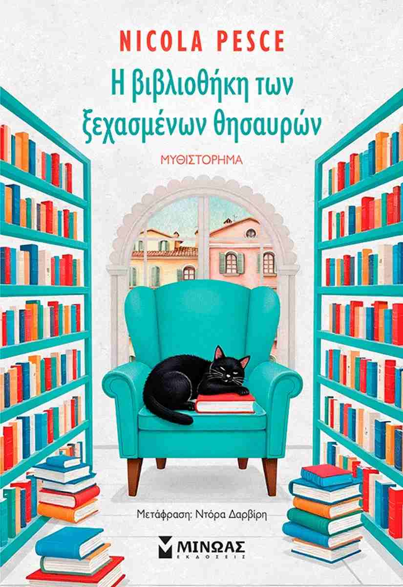
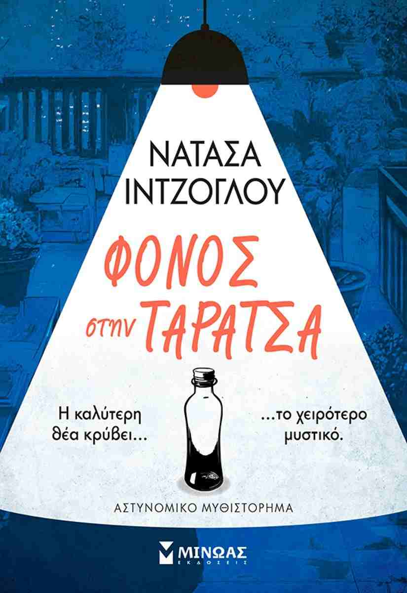
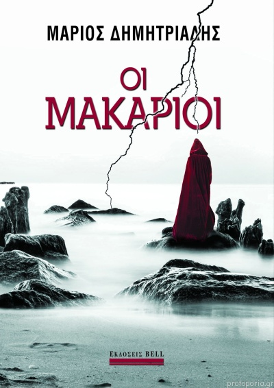

Εδώ θα ανακαλύψεις βιβλία που προβληματίζουν, συγκινούν και εμπνέουν. Θα σε συντροφεύουν κάθε στιγμή που ζητάς κάτι περισσότερο απο μία απλή ανάγνωση
|
 Η Λένα, μια νεαρή γυναίκα, θέλει να λυτρωθεί από τις ανασφάλειες και τα τραύματα που της έχει δημιουργήσει η οικογένειά της. Αποφασίζει να κυνηγήσει το όνειρό της, ανοίγοντας ένα μικρό βιβλιοπωλείο στη Βενετία. Στο μεταξύ, ένας μαύρος γατούλης ονόματι Ερίνι, γεννημένος σε διαμέρισμα, ξαφνικά βρίσκεται στον δρόμο και πρέπει να αρχίσει μια καινούρια ζωή ως αδέσποτος στα βενετσιάνικα καλντερίμια. Η Λέντα και ο Ερίνι φαίνεται πως είναι γραφτό να συναντηθούν. Το μικρό βιβλιοπωλείο, όμως, δεν είναι όπως τα άλλα, μα ένα μέρος προστατευμένο, μαγεμένο. Μια μέρα, γκρεμίζοντας έναν τοίχο από τούβλα, η Λέντα ανακαλύπτει κρυμμένη μια παμπάλαια και πολύ ιδιαίτερη βιβλιοθήκη. Στα ράφια της φιλοξενούνται βιβλία ξεχασμένα, χαμένα και έργα που σπουδαίοι συγγραφείς είχαν μόνο ονειρευτεί αλλά δεν είχαν γράψει ποτέ: Γκόγκολ, Αριστοτέλης και Μπωντλαίρ. Ένα βράδυ, η Λέντα ανακαλύπτει πως το μυστικό δωμάτιο είναι και μια πύλη που, τις νύχτες, τς επιτρέπει να κάνει αναπάντεχες συναντήσεις: να περπατά με τον Φιόντορ Ντοστογιέφσκι στους χιονισμένους δρόμους της Αγίας Πετρούπολης της εποχής του ή με τον Τζάκομο Λεοπάρντι στα ανηφορικά σοκάκια του Ρεκανάτι των αρχών του δεκάτου ενάτου αιώνα. Ένα μαγικό ταξίδι ανάμεσα σε γκρεμισμένα όνειρα και καινούρια ξεκινήματα όπου τα συναισθήματα ρέουν γαλήνια, όπως τα κανάλια ανάμεσα στους δρόμους και στις γέφυρες της Βενετίας. Πρόκειται για ένα αισθαντικό και ποιητικό μυθιστόρημα, που παρουσιάζει την ευθραυστότητα της ανθρώπινης ψυχής και τη σωτήρια δύναμη της λογοτεχνίας. Εκδόσεις Μίνωας |
 Ένα βράδυ που ξεκίνησε με γιορτή και χαμόγελα τελειώνει με ένα πτώμα, όταν μία καλεσμένη πέφτει νεκρή από δηλητηρίαση με στρυχνίνη. Η ντετέκτιβ Ανδριάνα Νικάκη και ο βοηθός της, Ερμής Κέζης, καλούνται να ξεχωρίσουν την αλήθεια από τα αποκαΐδια μιας παρέας που ξέρει να κρύβει καλά τα μυστικά της. Πίσω από τις μάσκες των καλεσμένων παραμονεύουν εμμονές , προδοσίες και πληγές που δεν έχουν κλείσει ποτέ. Καθώς το μυστήριο βαθαίνει, η αλήθεια μοιάζει ολοένα και πιο απειλητική και το φως που τη φωτίζει σκοτεινότερο από το ψέμα. Ένα αστυνομικό μυθιστόρημα που παρασύρει τον αναγνώστη σε μια ιστορία όπου τίποτα δεν είναι όπως φαίνεται. Εκδόσεις Μίνωας |
Η μάνα μου πάντα με κοιτούσε στα μάτια και μου το έλεγε: «Να προσέχεις. Όχι γιατί μπορεί οι άνθρωποι να σου κάνουν κακό ή να σε πειράξουν... Να προσέχεις μήπως χάσεις την πίστη σου σ' εκείνους και, τελικά, χάσεις εσένα». Και παραδόξως αυτό το «να προσέχεις» το κατάλαβα όταν έχασα την πίστη μου στους ανθρώπους, και στο τέλος, έχασα κι εμένα.. Αυτό το ταξίδι θα το κάνουμε παρέα, στους πιο κοινούς μας τόπους. Εκεί όπου είμαστε ολόιδιοι. Χωρίς άλλα μασκαρέματα. Εκεί, παρέα με τον φόβο, την ενοχή και τον πόνο. Μήπως και δούμε τελικά πως μέσα από τα σακατεμένα μπερδέματά μας το φως περιμένει να μας βρει. Αρκεί να έχουμε το θάρρος να το προσκαλέσουμε. Εκδόσεις Ψυχογιός |
Στο βιβλίο «Ήσυχα σε έναν κόσμο που φωνάζει», ο Γιώργος Σπαγαδώρος προτείνει έναν διαφορετικό τρόπο προσέγγισης της ζωής: χωρίς μεγάλες υποσχέσεις, χωρίς εύκολες λύσεις, αλλά με ειλικρίνεια, γείωση και ανθρώπινη κατανόηση. Σε μια εποχή έντασης, υπερπληροφόρησης και συνεχούς πίεσης, το βιβλίο λειτουργεί ως μια πρόσκληση επιστροφής στον εαυτό μας. Ο συγγραφέας δεν επιχειρεί να «απογειώσει» τον αναγνώστη με υπερβολικές θεωρίες αυτοβελτίωσης.Αντίθετα επιδιώκει να τον στηρίξει ώστε να σταθεί σταθερά στη δική του πραγματικότητα.Με λόγο άμεσο και προσωπικό, κινείται ανάμεσα στην τρυφερότητα και την αγαπητική πειθαρχία, υπενθυμίζοντας ότι η πραγματική αλλαγή ξεκινά από όσα μπορούμε να ελέγξουμε: τις σκέψεις, τις αντιδράσεις και τις επιλογές μας. Κάθε κεφάλαιο αποτελεί μια στάση αυτοπαρατήρησης και προβληματισμού. Μέσα από μικρά νοητικά εργαλεία και καθημερινές αλήθειες, ο αναγνώστης καλείται να επανασυνδεθεί με αξίες που συχνά χάνονται μέσα στη φασαρία της σύγχρονης ζωής. Το βιβλίο μιλά για την ανάγκη ουσιαστικής επικοινωνίας, για τη σημασία της διαφωνίας χωρίς σύγκρουση και για την καλλιέργεια μιας ζωής με περισσότερη συνειδητότητα και λιγότερο θόρυβο. Εκδόσεις Ψυχογιός |
 Ο Αλέξανδρος είναι ένας νεαρός δάσκαλος και η καινούργια σχολική χρονιά τον βρίσκει με μετάθεση σε ένα άγνωστο,απομακρυσμένο νησί του Αιγαίου. Από την πρώτη στιγμή που πατάει το πόδι του στη Μακάρια αντιλαμβάνεται ότι οι λιγοστοί κάτοικοι είναι επιφυλακτικοί και καχύποπτοι απέναντί του. Και καθώς οι μέρες περνούν, ο Αλέξανδρος συνειδητοποιεί ότι πίσω από τις φαινομενικά ήσυχες ζωές τους οι ντόπιοι κρύβουν πολλά και επικίνδυνα μυστικά.Οι "Μακάριοι" είναι μια συναρπαστική μεταφυσική ιστορία, ένα ατμοσφαιρικό μυθιστόρημα τρόμου, όπου το πιο σκοτεινό κακό έρχεται από το παρελθόν για να μας θυμίσει ότι οι αρχαίοι θεοί βρίσκονταν πάντα ανάμεσά μας... Εκδόσεις Μίνωας |